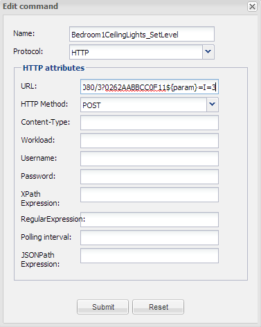

Hello all, I am today intending to address the fact that sliders are still somewhat a mystery as far as documentation goes. I have been trying to find threads explaining how to implement sliders to send http commands that are updated by the variable values assigned to the sliders themselves. It seems to me that many of you know how to implement this, but documentation for sliders is at best difficult to make sense of. So far I have been using CAI networks webcontrol 8 plc to monitor and control lighting and HVAC equipment, but the customization of OpenRemotes user interfaces and rules engine will be the key piece for me to run wild with my imagination and what the future will hold for low cost opensource hardware implementaion in residential and commercial settings. I realize that I may have the information I seek right under my nose, and I may be about to get bitten by it. Any one have some thread links for me?
{kind=link}
|
Hi Nick, I'm very keen to get this exact same functionality working where a sliders value can be included in a URL to control an Insteon dimmer. I have worked out how to get the status but not the ability to change it via the slider. I've found this very basic page on sliders which doesn't address the URL stuff though. It's something to add to the document collection. http://www.openremote.org/display/docs/Designer+2.0+-+Create+Sliders+for+Installers |
|
For passing the slider value to a device you need the magic ${param} variable. I use this with RaZberry to set a dimmer via: http://raspberry_IP:8083/JS/Run/DimmerSet(N,${param})
where the N stands for the Z-Wave device number. You can find more examples of ${param} usage on this forum. I agree that the documentation should more explicitly address this |
|
Thank you Peiter, I have successfully implemented the slider now! For those trying to use an Insteon dimmer, here is the URL that I used to push the slider value via HTTP.
http://192.168.0.20:8080/3?0262AABBCC0F11${param}=I=3
AABBCC is the address of the dimmer.  |
|
For better readability you could enclose your code within {code}..{code} tags (see markup instructions). Do not place a / inside the end tag. |
|
Thanks Pieter, fixed. |
|
OK, I now see that I was not totally wrong in assuming we had some details to hash out on this topic. I will use this advice and update my installation in the next day or so, and once done will post it here. For some reason I thought that Juha mentioned the ${param}
|
|
I should have mentioned that I am using Pro 1.0.11 |
|
Ok, I have got it working, kind of. The slider will send the value, and it is setting the plc variable, but after a few seconds it changes back to zero. I have disconnected the controller from the network and variable on plc stays at setting, however as soon as I plug controller back into network, the variable resets to zero. I have gone through the controller.xml but do not see any command conflicts. It definitely seems that OR is causing this to happen, any ideas? |
|
Not sure if this is similar to what I want to accomplish. I assume it is easily possible by inserting variables in the right spot with the correct syntax. My goal is to have multiple switches on my IOS app for each individual bulb. By selecting a bulb, I would like the slider for brightness to control it. So rather than have one slider per bulb, I would like the slider to be variable for the bulbs. Can that be easily accomplished? I completed the entire Hue section and have everything working so its just a matter of using variable correctly I would think. Any guidance is appreciated!!! |
|
You would need to linked the slider to an In Memory Virtual Command and use rules to decide to which light to send the value. |